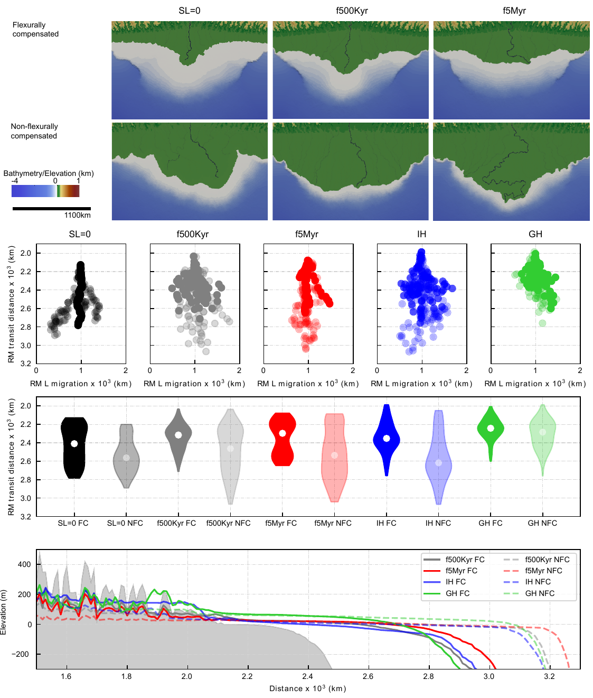
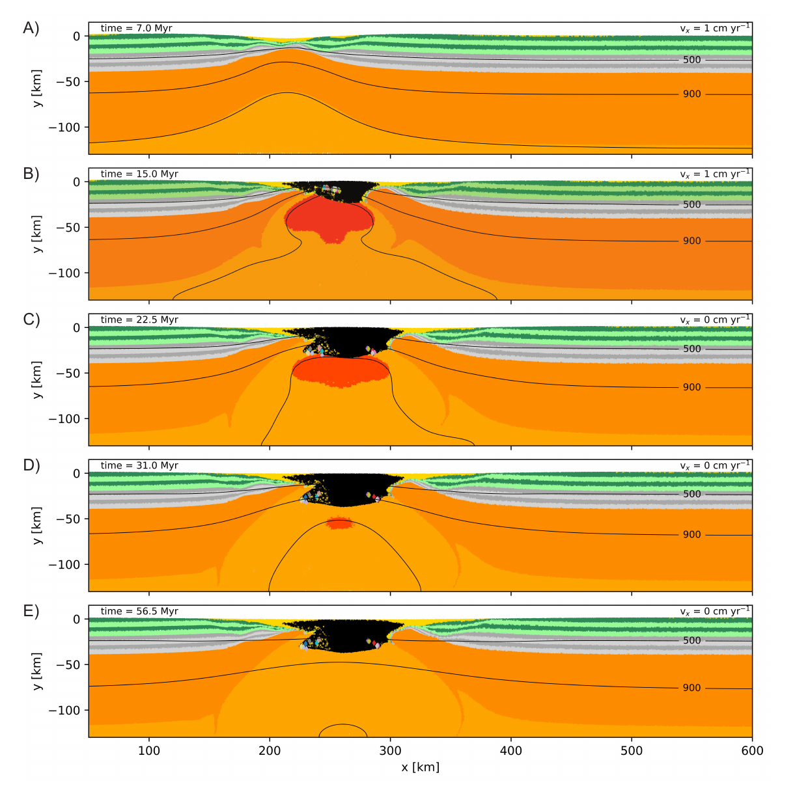
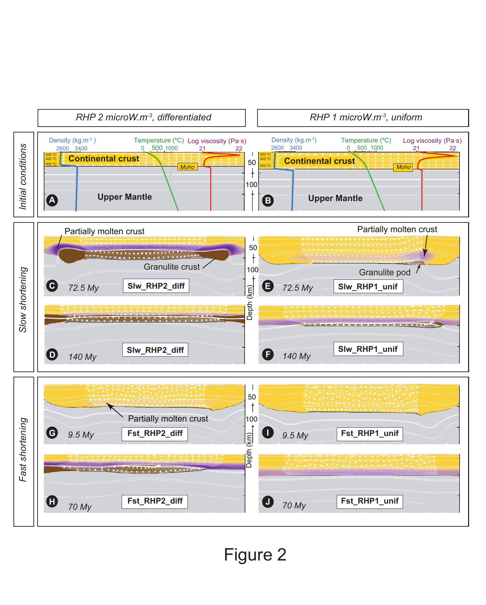

Models

Constraining the response of continental-scale groundwater flow to climate change

Plate bending earthquakes and the strength distribution of the lithosphere

Flexural isostatic response of continental-scale deltas to climatically driven sea level changes

ISMIP-HOM benchmark experiments using Underworld

Rift foundering and the generation of non-orogenic granulites during the Mesoproterozoic

Strain and retrogression partitioning explain long-term stability of crustal roots in stable continents

Timing of partial melting and granulite formation during the genesis of high to ultra‐high temperature terranes: Insight from numerical experiments

The ephemeral development of C′ shear bands: A numerical modelling approach

Numerical Modeling of Earthquake Cycles Based On Navier-Stokes Equations With Viscoelastic-Plasticity Rheology

The Role of Lithospheric-Deep Mantle Interactions on the Style and Stress Evolution of Arc-Continent Collision

Kinematics of Footwall Exhumation at Oceanic Detachment faults: Solid‐Block Rotation and Apparent Unbending